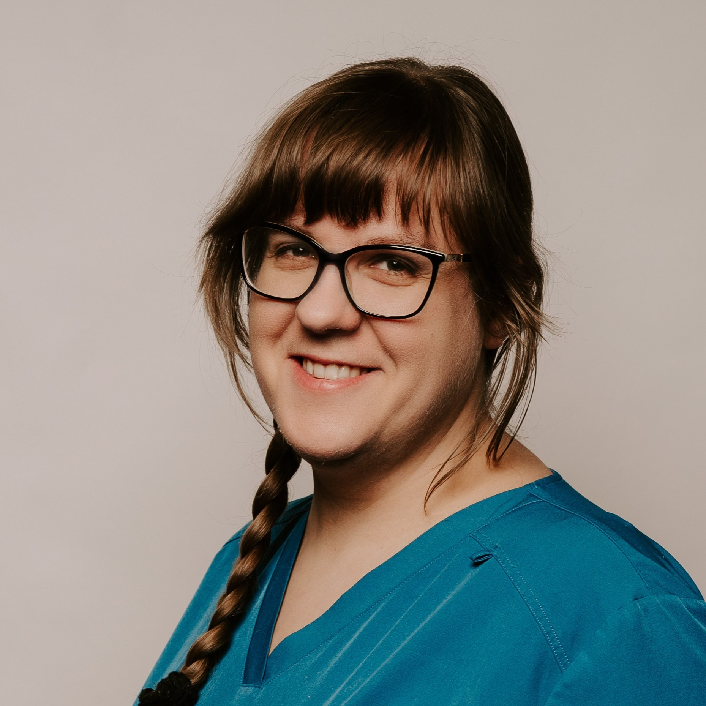

Nasz Zespół
Poznaj specjalistów, którzy zadbają o zdrowie Twojego zwierzaka


lek. wet. Aleksandra Romaniszyn
Lekarz weterynarii
lek. wet. Jarosław Pydych
Lekarz weterynarii
lek. wet. Sandra Potyrcha
Lekarz weterynarii
tech. wet. Sandra Białdyga
Technik weterynarii